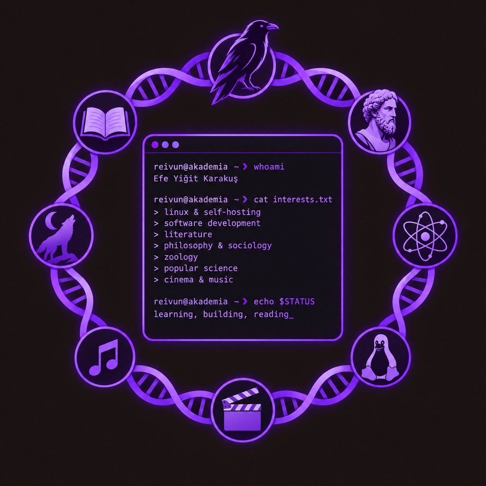
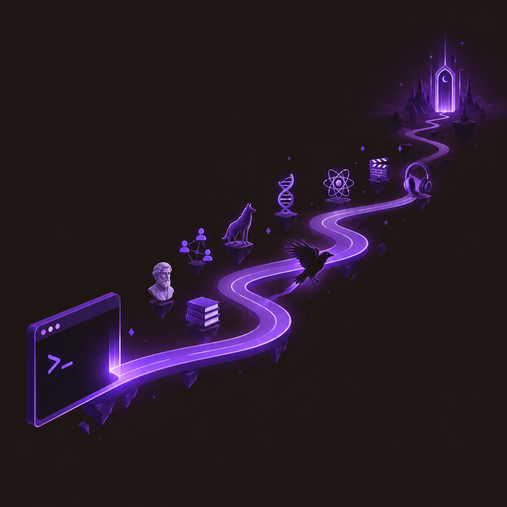

Ben kimim?
Adım Efe Yiğit Karakuş, ama internetteki takma adım "Reivun" nasıl isterseniz öyle seslenebilirsiniz. Yazılım geliştirme, teknoloji, linux, edebiyat, sosyal bilimler -felsefe ve sosyoloji gibi-, zooloji, popüler bilim, sinematografi ve müzik dahil olmak üzere pek çok alana merak duyan ve ilgisi olan bir gencim.


Planlarım neler?
Geçen sene YKS'de beklediğim sonucu alamayınca bir önlisans progrmamına yerleştim. Fakat önlisans programının ilk yılını sürdürürken tekrar YKS'ye hazırlanıp bir lisans programına yerleşmeyi düşünüyorum. Mezun olduktan sonra bir web geliştirici olacağım, aynı zamanda bir sonraki yıl youtubeda çeşitli alanlarda içerik üreteceğim. Kitaplar yazmayı da planlasam da bu çok sonra olacak birşey.
Neden neovim kullanıyorum?
Çünkü neovim en iyi ide ve vscode acemiler için.
Note: Bu kısım tamamen ragebaitden ibarettir.
Politik görüşüm
Gerçek hayatta bütün ideolojiler iğrenç olsa da sembolik olarak meritokratik sosyalistim ayrıca kapitalizmden nefret ediyorum